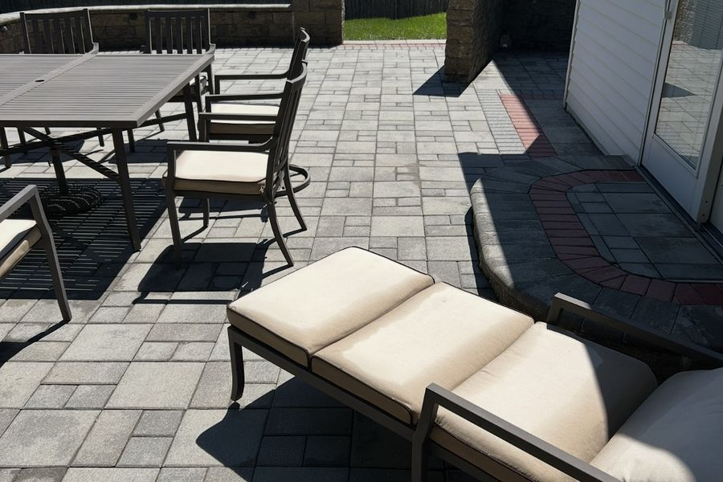
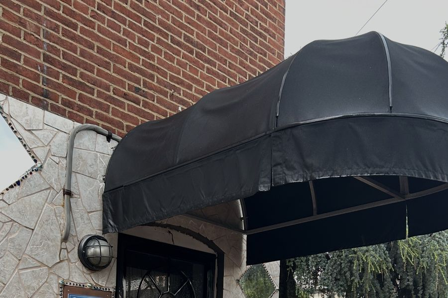

Small things that are quick while the equipment is already set up, and awkward to justify a visit for on their own.
Patio sets, loungers and cushions collect the same film as the deck they stand on. Cleaning the furniture and the cushions can bring them back to new condition, and buy you a few more seasons before they need replacing. Priced per piece, and quick work alongside a deck or patio clean.
Fabric awnings grow mildew in exactly the way a north wall does, and the worst of it is usually on the top side, where the damp sits longest. They take a gentle wash - fabric will not survive pressure and the stitching goes first.
Priced by the square foot.
Cans are worth adding while the equipment is already out. They get washed inside and out, which clears the gunk that builds up in the bottom of them over a summer.


Prices are on screen in the estimator, and nothing is due until the work is finished. Book the date yourself when you are ready.